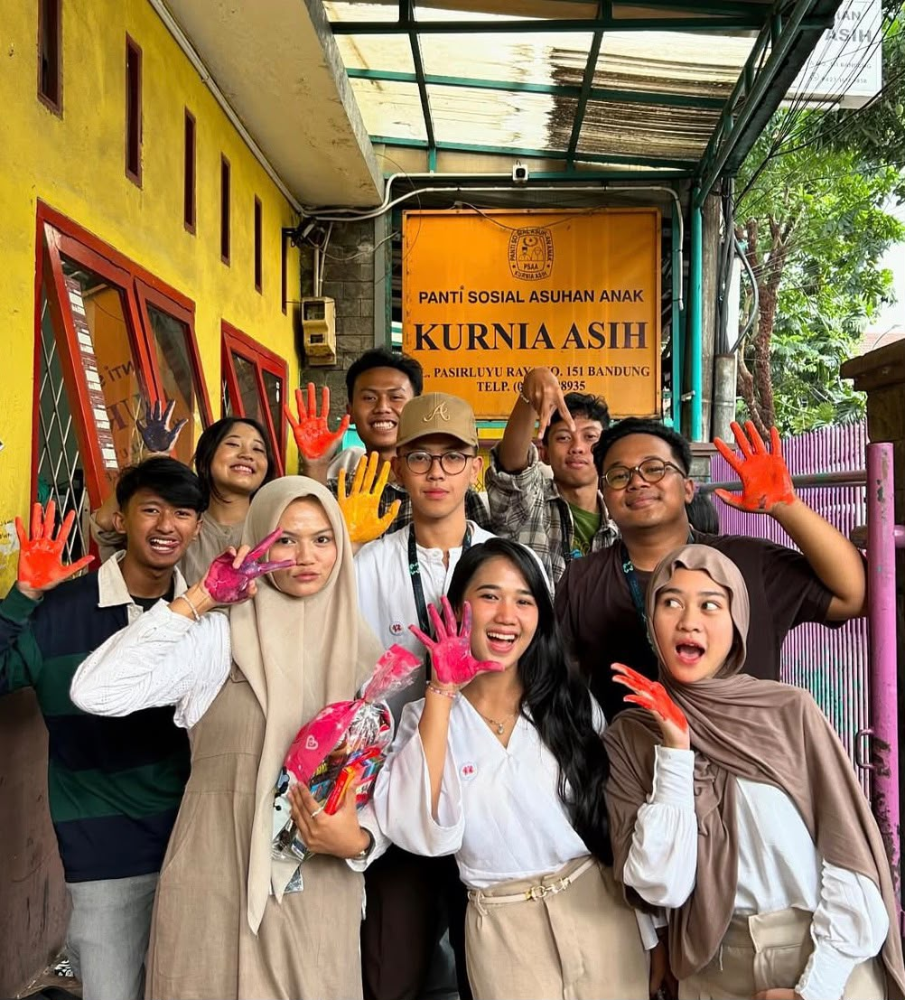
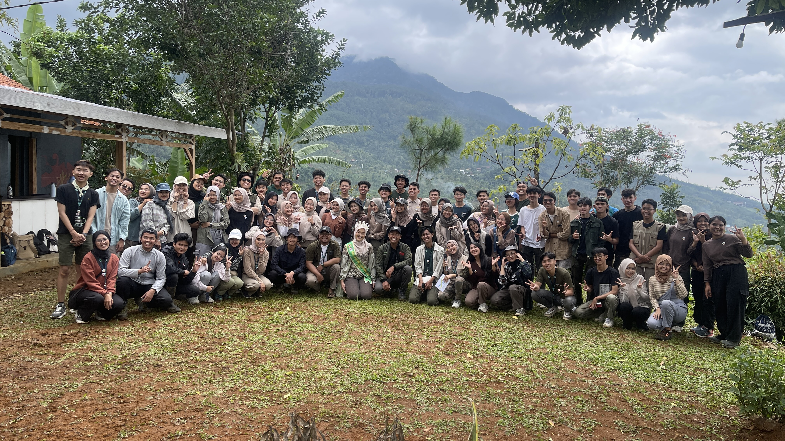
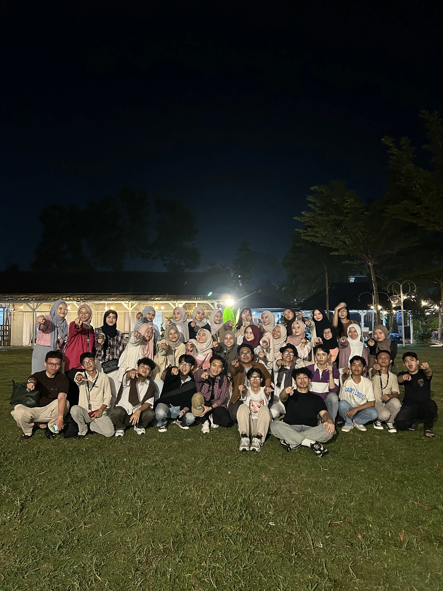
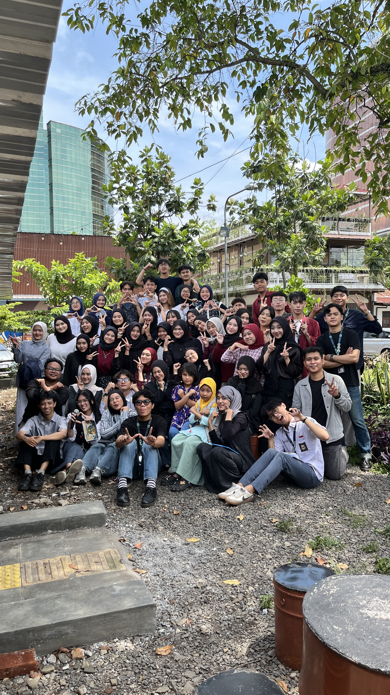

Project Kami

MEGA Project Vol. 1
MEGA Project dari Paramuda Indonesia hadir sebagai gerakan kolaboratif memperingati hari jadi organisasi dengan mengintegrasikan tiga pilar utama—Pendidikan, Sosial, dan Budaya—melalui semangat *“Ngajaga, Ngabakti, Ngaronjatkeun”*. Gerakan ini memadukan enam program utama (Wawangi, Paijaran, Kasawala, Padasih, Paradana, dan Miangasa) yang diwujudkan lewat aksi nyata seperti edukasi masyarakat, penyuluhan Al-Qur'an, dukungan UMKM, kepedulian sosial bagi anak-anak dan lansia, hingga pelestarian tradisi melalui kaulinan Sunda dan pagelaran budaya. Kolaborasi ini bertujuan untuk memberikan dampak langsung yang positif, mempererat rasa kepedulian sesama, serta menciptakan perubahan sosial-budaya yang bermakna dan berkelanjutan bagi generasi muda dan masyarakat luas.
a. Berbagai kegiatan edukatif memberikan ruang belajar, kreativitas, dan pengembangan pengetahuan bagi anak-anak, generasi muda, serta masyarakat. b. Aksi sosial yang dilakukan memperkuat nilai empati, kebersamaan, dan kepedulian terhadap kelompok masyarakat, termasuk anak-anak dan lansia. c. Melalui kaulinan Sunda, permainan tradisional, seni, dan berbagai aktivitas budaya, MEGA Project turut menjaga agar budaya lokal tetap dikenal dan relevan bagi generasi muda.

Sharing Love, Gaining Happines
Kunjungan Panti Asuhan merupakan kegiatan sosial yang diselenggarakan oleh Komunitas Paramuda.id sebagai bentuk kepedulian dan upaya untuk berbagi kebahagiaan bersama anak-anak di Panti Sosial Asuhan Anak (PSAA) Kurnia Asih, Kota Bandung. Mengusung tema “Sharing Love, Gaining Happiness”, kegiatan ini menjadi ruang bagi para Kaula Muda untuk saling berbagi cinta, perhatian, kebersamaan, serta menciptakan kebahagiaan melalui interaksi dan kegiatan positif bersama anak-anak panti. Kegiatan ini tidak hanya berfokus pada pemberian bantuan, tetapi juga membangun hubungan sosial, menghadirkan rasa kebersamaan, dan menciptakan pengalaman yang berkesan bagi seluruh pihak yang terlibat. Melalui semangat gotong royong dan kepedulian, Paramuda.id percaya bahwa kebahagiaan akan terasa lebih besar ketika dapat dibagikan kepada sesama.
Kegiatan ini memberikan beberapa dampak positif, di antaranya: a. Mendorong para Kaula Muda untuk lebih peka terhadap lingkungan dan kondisi sosial di sekitarnya. b. Menciptakan interaksi dan hubungan yang positif antara relawan, komunitas, dan anak-anak panti asuhan. c. Memberikan pengalaman, perhatian, dan momen kebersamaan yang dapat menghadirkan kebahagiaan bagi anak-anak maupun relawan.

Penanaman 100 Pohon
Dalam rangka memperingati Hari Pohon Sedunia, Paramuda.id melaksanakan aksi lingkungan Penanaman 100 Pohon (P100P) dengan tema “Satu Genggaman Sejuta Manfaat”. Kegiatan ini merupakan bentuk kepedulian terhadap kelestarian lingkungan melalui aksi nyata penanaman 100 bibit pohon yang terdiri dari Akasia Mangium, Ekaliptus, Mahoni, dan Sengon. Melalui kegiatan ini, Paramuda.id berupaya untuk mendukung terciptanya lingkungan yang lebih hijau, nyaman, dan berkelanjutan. Aksi Penanaman 100 Pohon dilaksanakan pada 1 Desember 2024 di D'joemar Hill, Melatiwangi, Kecamatan Cilengkrang, Kabupaten Bandung, Jawa Barat. Kegiatan ini menjadi pengingat bahwa menjaga alam dapat dimulai dari langkah sederhana, karena setiap pohon yang ditanam hari ini dapat memberikan manfaat bagi lingkungan dan generasi di masa depan.
a. Sebanyak 100 bibit pohon berhasil ditanam sebagai langkah nyata dalam mendukung penghijauan dan kelestarian lingkungan. b. Penanaman pohon menjadi kontribusi dalam menciptakan kawasan yang lebih hijau, asri, dan nyaman bagi lingkungan sekitar. c. Seiring pertumbuhannya, pohon-pohon yang ditanam diharapkan dapat membantu menyerap karbon dioksida dan mendukung terciptanya udara yang lebih bersih.

Paramuda Goes to School Vol. 1Paramuda Goes to School Vol. 1
Paramuda Goes to School Vol.1 merupakan kegiatan edukatif yang diinisiasi oleh Paramuda Indonesia sebagai upaya untuk membangun generasi muda yang cerdas, peduli, dan berkarakter. Mengusung tema “Membangun Generasi Unggul Melalui Edukasi dan Inovasi”, kegiatan ini menjadi ruang bagi Paramuda untuk berbagi pengetahuan, pengalaman, serta nilai-nilai positif kepada para pelajar. Melalui program ini, Paramuda mengunjungi 7 sekolah di Kota Bandung dan Garut dan mengimplementasikan tiga pilar utama, yaitu Pengembangan Inovasi dan Pendidikan, Sosial dan Kemanusiaan, serta Kesenian dan Kebudayaan.
a. Paramuda Goes to School berhasil menjangkau 7 sekolah di Kota Bandung dan Garut sebagai bagian dari upaya memperluas kegiatan edukatif dan inspiratif bagi para pelajar. b. Melalui berbagai kegiatan edukatif, program ini memberikan ruang bagi siswa untuk memperoleh pengalaman baru, mengembangkan kreativitas, serta meningkatkan semangat dalam belajar dan berinovasi. c. Kegiatan yang dilaksanakan turut mendorong para siswa untuk memahami pentingnya kepedulian, kebersamaan, dan kontribusi positif terhadap lingkungan sosial.

Paramuda Goes to School Vol. 2
Paramuda Goes to School Vol. 2 merupakan gerakan edukatif yang diinisiasi oleh Paramuda Indonesia untuk membangun generasi muda yang kreatif, berani bereksplorasi, dan siap beraksi. Mengusung tema “Act, Creativity & Exploration”, kegiatan ini bertujuan untuk memberikan pengalaman edukatif yang lebih interaktif sekaligus menanamkan nilai-nilai positif kepada para pelajar. Melalui program ini, Paramuda Goes to School Vol. 2 mengimplementasikan tiga pilar utama Paramuda, yaitu Pengembangan Inovasi dan Pendidikan, Sosial dan Kemanusiaan, serta Kesenian dan Kebudayaan. Rangkaian kegiatan tidak hanya menghadirkan edukasi dan pengembangan kreativitas, tetapi juga membahas isu-isu yang relevan bagi pelajar, seperti bullying, untuk mendorong terciptanya lingkungan belajar yang lebih aman dan nyaman.
a. Paramuda Goes to School Vol. 2 berhasil memperluas jangkauan kegiatan edukatif melalui kunjungan ke 12 sekolah di Kota Bandung. b. Kegiatan ini memberikan ruang bagi para siswa untuk belajar melalui pengalaman yang lebih interaktif, kreatif, dan mendorong keberanian untuk bereksplorasi. c. Edukasi mengenai bullying menjadi salah satu upaya untuk meningkatkan pemahaman siswa mengenai pentingnya menciptakan lingkungan sekolah yang aman, nyaman, dan saling menghargai.

Z'Energi
Z'Eergi Project merupakan gerakan positif yang diinisiasi oleh Paramuda Indonesia dari semangat Generasi Z untuk menghadirkan perubahan melalui aksi nyata. Mengusung konsep aksi sosial, spiritual, dan edukatif, program ini menjadi wadah bagi generasi muda untuk menyalurkan energi kebaikan dan memberikan kontribusi nyata kepada masyarakat. Melalui program ini, relawan Z'Energi Project tidak hanya berbagi kebahagiaan, tetapi juga belajar memahami makna kepedulian, empati, dan kebersamaan. Kegiatan ini menyalakan semangat kolaborasi antar generasi muda untuk terus berinovasi, berenergi, dan menjadi sumber inspirasi bagi lingkungan sekitar. Z'Energi Project dilaksanakan dengan mengunjungi 6 panti, 6 masjid, serta 6 madrasah.
a. Z'Energi Project berhasil memperluas jangkauan kebaikan dengan mengunjungi 6 panti, 6 masjid, dan 6 madrasah. b. Mendorong para relawan dan masyarakat untuk lebih memahami arti kebersamaan, kepedulian, serta rasa empati terhadap sesama. c. Kunjungan ke masjid dan madrasah menjadi sarana untuk memperkuat nilai-nilai keagamaan sekaligus mendukung kegiatan edukatif bagi anak-anak.

MEGA Project Vol. 2
Mega Project Vol. 2 merupakan gerakan kepemudaan yang diinisiasi oleh Paramuda Indonesia untuk memperingati hari jadinya yang ke-dua melalui tema *"Dari Hati, Mengasah Potensi, Merawat Tradisi"* dengan mengintegrasikan pilar Sosial, Pendidikan, dan Budaya secara holistik di Kota Bandung. Pilar Sosial mendorong inklusivitas dan kesetaraan dengan mendatangi 5 Sekolah Luar Biasa (SLB), pilar Pendidikan membekali pelajar di 15 SMA melalui pemetaan minat bakat dan perencanaan karier sejak dini, serta pilar Budaya menjadi puncak acara lewat Pagelaran Budaya kolaboratif dan *kaulinan barudak* untuk melestarikan tradisi lokal. Melalui sinergi ketiga pilar tersebut, rangkaian kegiatan ini berhasil memadukan aksi kepedulian sosial, pemberdayaan generasi muda, dan pelestarian budaya demi menciptakan dampak positif yang nyata dan berkelanjutan bagi masyarakat.
a. Pilar Pendidikan berhasil memperluas jangkauan edukasi ke 15 SMA di Kota Bandung, memberikan pemahaman perencanaan karier, pemetaan minat-bakat, dan orientasi masa depan secara langsung kepada 1.500+ siswa b. Pilar Sosial berhasil menggerakkan 5 kelompok tim untuk mendatangi 5 SLB di Kota Bandung, menciptakan ruang inklusif dan membagikan pengalaman interaktif yang hangat bagi 150+ siswa SLB c. Pilar Budaya sukses menyatukan siswa SMA, teman-teman disabilitas SLB, relawan, komunitas, dan alumni dalam satu panggung, menghidupkan kembali tradisi kaulinan barudak serta memperkuat identitas budaya lokal di kalangan pemuda.